Metric pour macOS
Boîte à outils de timing et de fréquences pour macOS, avec un métronome intégré. Elle règle des temps de délai à partir d'un tempo, calcule les rapports et les bandes latérales FM, synchronise un LFO sur le rythme et transpose un sample, dans une fenêtre redimensionnable que vous pouvez garder ouverte à côté de votre DAW. Siri, Shortcuts et un widget dans le Notification Center sont pris en charge.
- Métronome avec tap tempo et battements visuels
- Convertisseur BPM → ms / Hz (normal, pointé, triolet)
- Table note ↔ fréquence (108 notes, A4 = 440 Hz)
- Transposition et vitesse, calculateur FM, taux LFO, 32 harmoniques
- Tap tempo dans la barre des menus, temps de délai en ms ou Hz, plus métronome et notes
- Siri, Shortcuts et un widget BPM dans le Notification Center
Captures d'écran
Comprend des captures en mode clair et sombre qui suivent le thème du site.

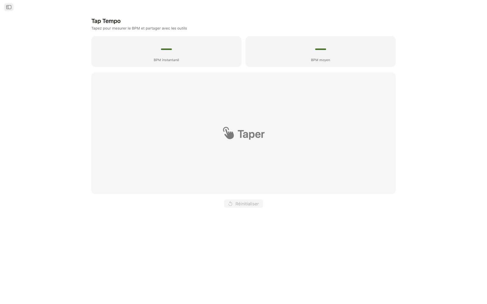
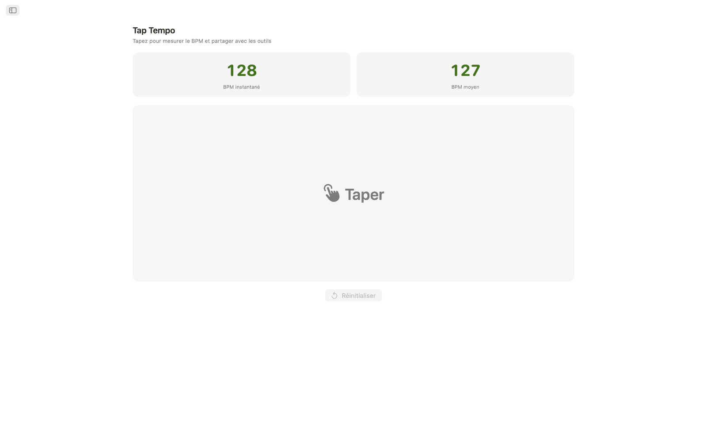
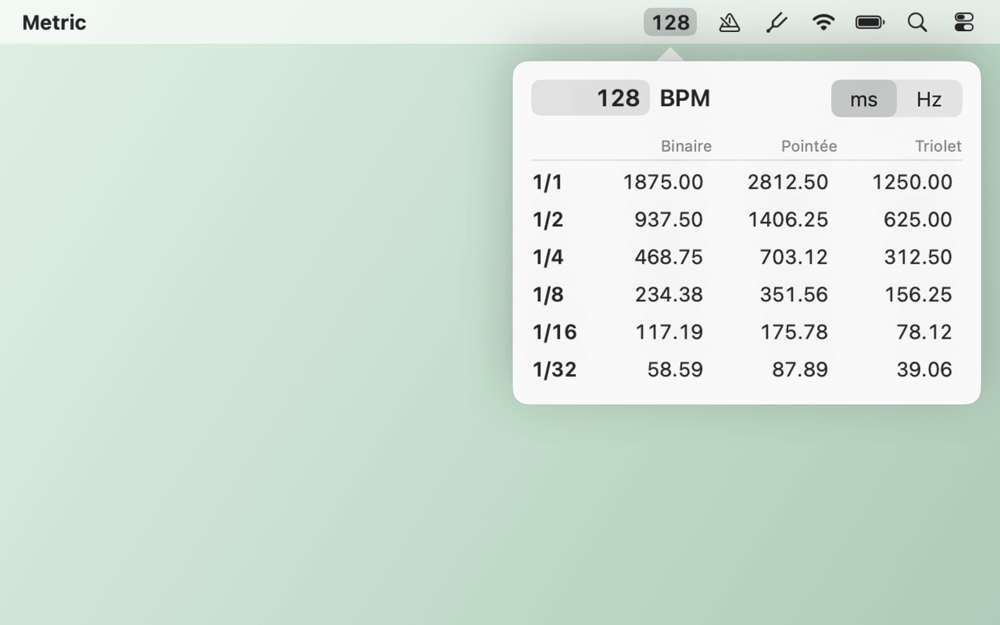
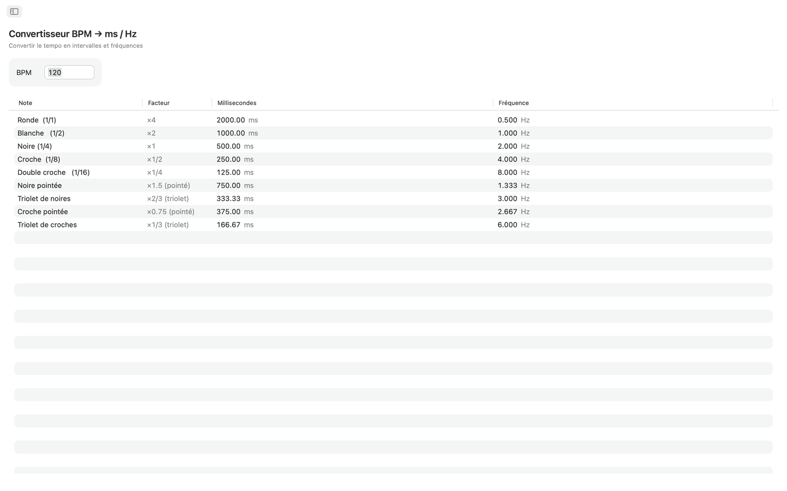
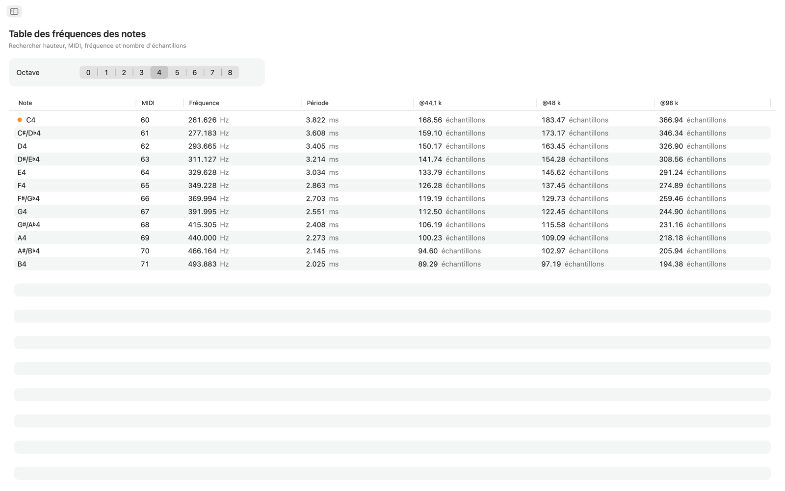
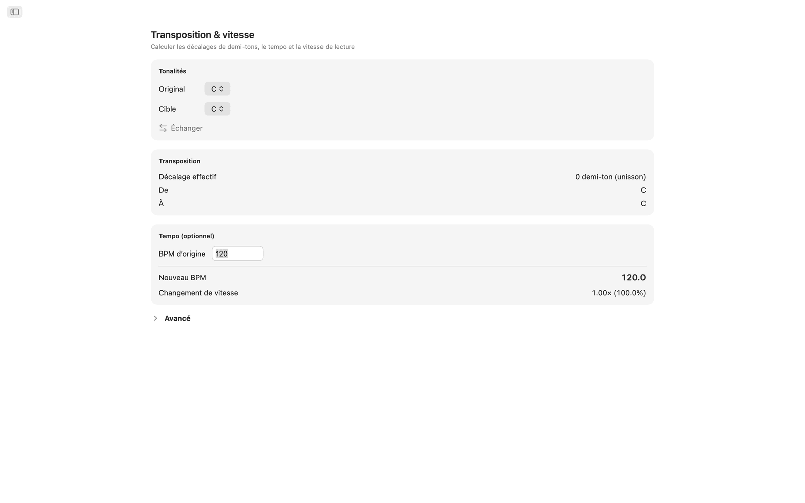
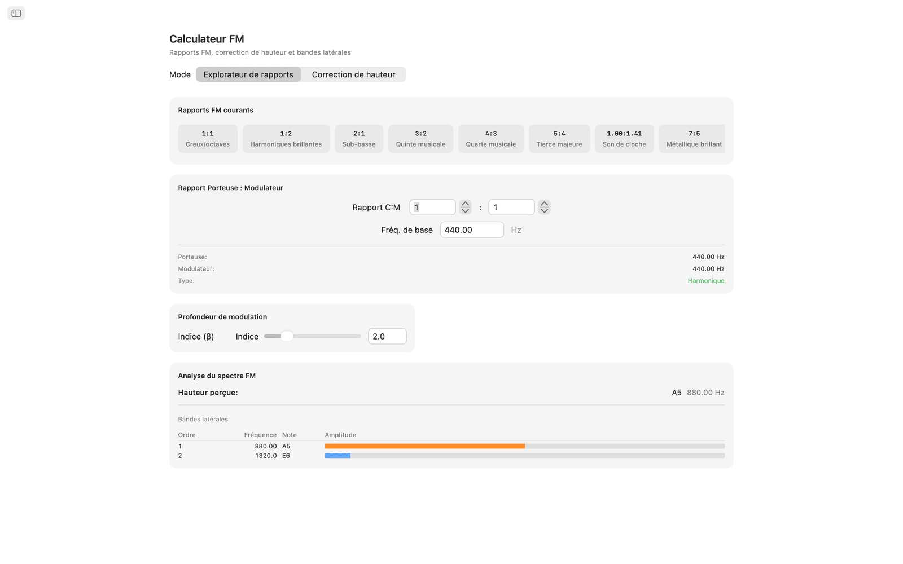
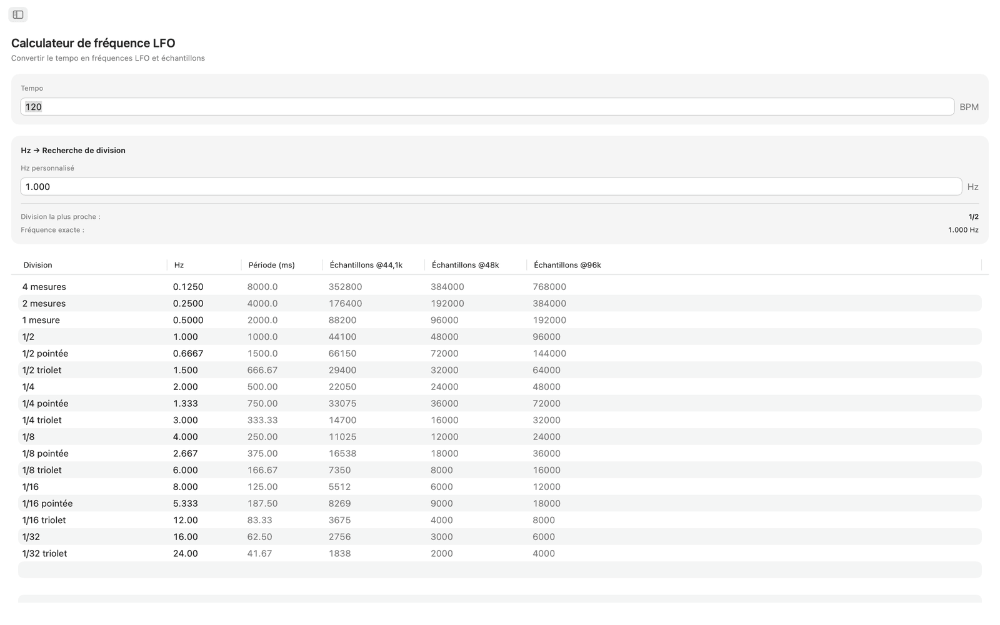
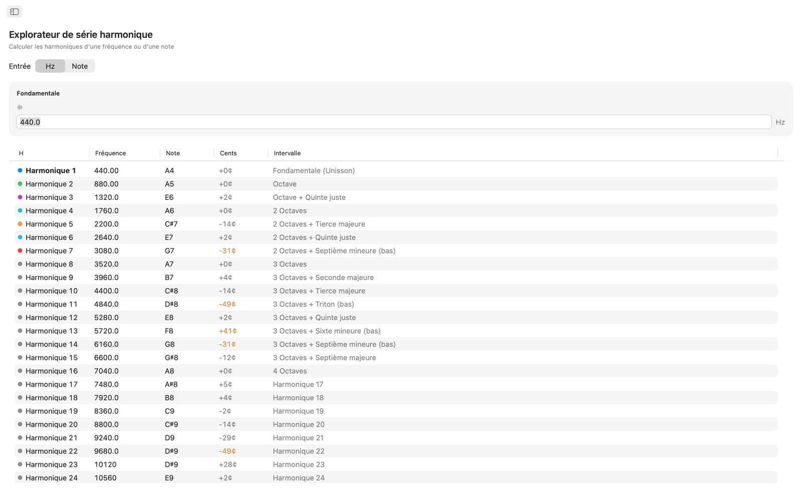
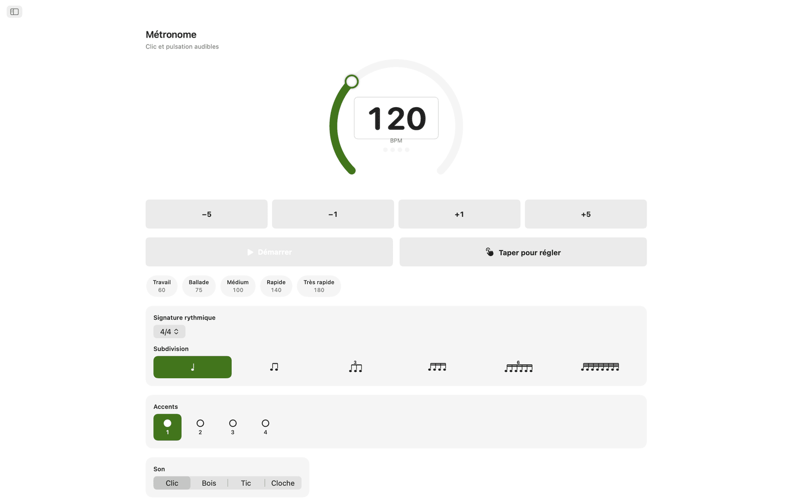
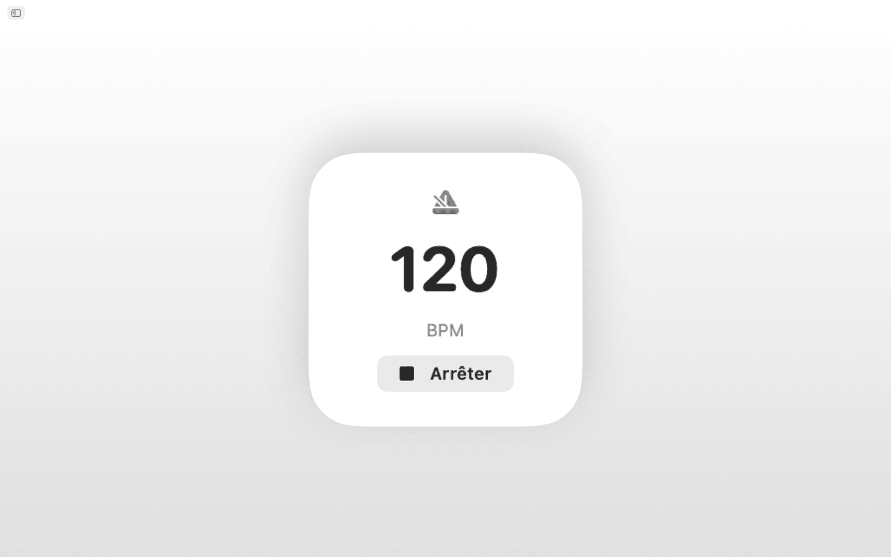
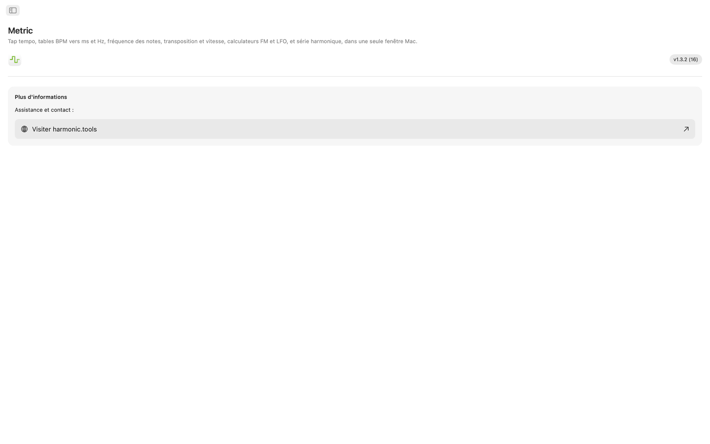
Fonctionnalités
- Le métronome a un cadran de tempo, un réglage du tempo par tapotement, des signatures rythmiques, des subdivisions et un indicateur de battement visuel.
- Cliquez sur la grande zone de tapotement pour mesurer le tempo. Metric affiche le BPM du dernier tapotement et une moyenne glissante sur jusqu'à huit tapotements, et l'une ou l'autre valeur peut aller directement vers le convertisseur BPM, la transposition ou les taux LFO en un clic.
- Le convertisseur BPM → ms / Hz prend un tempo et donne les valeurs normales, pointées et triolets pour les rondes, blanches, noires, croches et doubles croches. Chaque ligne affiche les millisecondes et la fréquence en Hz, ce qui permet de régler le délai, le pré-délai de réverbe ou le timing du sidechain sans calculatrice.
- La table de fréquences des notes liste les 108 notes chromatiques de C0 à B8. Chaque note affiche son numéro MIDI, sa fréquence en Hz, sa période en millisecondes et le nombre d'échantillons à 44,1 kHz, 48 kHz et 96 kHz. Le C central (C4) est signalé. Basé sur A4 = 440 Hz.
- Pour la transposition, choisissez une tonalité d'origine et une tonalité cible pour voir le décalage en demi-tons, le nom de l'intervalle et la valeur de transposition DAW exacte. Ajoutez un BPM d'origine et Metric calcule le nouveau tempo et le rapport de vitesse de lecture. Un curseur de cents (±100) et un curseur de vitesse couvrant deux octaves (±24 demi-tons) permettent d'affiner.
- Le calculateur FM a deux modes. L'explorateur de rapports définit les rapports porteuse et modulateur à partir d'une fréquence de base et propose dix préréglages FM, des octaves creuses (1:1) aux cloches inharmoniques (1:π). La correction de hauteur fonctionne en sens inverse : choisissez une note cible et obtenez les fréquences exactes de la porteuse et du modulateur. Les deux modes affichent une table de bandes latérales de jusqu'à dix partiels, avec leurs fréquences, les notes les plus proches et des amplitudes codées par couleur, pilotées par un curseur d'indice de modulation.
- Le calculateur de taux LFO convertit n'importe quel BPM en taux LFO sur 17 divisions musicales, de quatre mesures à 1/32 triolets. Chaque ligne affiche les Hz, la période en millisecondes et les échantillons par cycle à 44,1 kHz, 48 kHz et 96 kHz. La recherche inverse prend n'importe quelle valeur en Hz et trouve la division musicale la plus proche, avec l'écart indiqué.
- L'explorateur de séries harmoniques part d'une fréquence ou d'une note et liste les 32 premiers harmoniques avec la fréquence, le nom de la note la plus proche, l'écart en cents et l'étiquette d'intervalle. Les harmoniques de rang bas sont codés par couleur, et les écarts supérieurs à 30 cents sont mis en surbrillance, ce qui permet de repérer facilement le contenu inharmonique.
Tempo et diapason partagés
Tapotez un tempo une fois et le convertisseur BPM, la transposition et les taux LFO utilisent tous le même BPM en temps réel. La fréquence des notes, le calculateur FM et les harmoniques utilisent tous A4 = 440 Hz.
Siri, Shortcuts et widget
Demandez à Siri de démarrer ou d'arrêter le métronome, de définir un BPM, de tapoter un tempo, de convertir un BPM en ms, de trouver la fréquence d'une note ou de transposer un tempo. Chaque outil est aussi une action Shortcuts, et le widget BPM garde votre tempo dans le Notification Center.
Outils dans la barre des menus
Tapotez un tempo depuis la barre des menus sans ouvrir l'app. Un clic droit affiche les temps de délai en ms ou en Hz, et vous pouvez saisir n'importe quel tempo. En option : métronome, hauteurs de notes, mode barre des menus seule et ouverture à la connexion.
Sur le bureau
- Fonctionne entièrement hors ligne. Pas de compte, pas de publicités, pas de suivi
- Application macOS native avec navigation par barre latérale
- Interface compatible mode sombre qui suit l'apparence de votre système
- Nombre d'échantillons à 44,1 kHz, 48 kHz et 96 kHz
- Fenêtre redimensionnable. Gardez-la ouverte à côté de votre DAW
Accessibilité
Compatible avec VoiceOver et le Contrôle vocal, et utilisable au clavier, avec les flèches et la barre d'espace.
Vous pouvez essayer Metric gratuitement pendant 7 jours. Après l'essai, l'accès complet est un achat unique, sans abonnement.